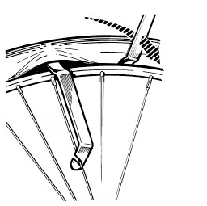
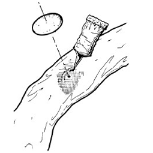

Hoe plak ik mijn lekke band?
Balen. Het regent. Je bent net ver van huis. Is je band lek. Potverdorie. Gelukkig heb je een bandplaksetje. Hoe plak je je band?

Stap 1 - Check ventiel
Het kan zomaar je ventiel zijn. Dat is fijn, want die is makkelijk te vervangen. Controleren of je ventiel stuk is doe je zo:- Draai het zwarte dopje van het ventiel.
- Doe een beetje spuug op het ventiel.
- Onstaan er bubbeltjes dan is je ventiel lek.
- In ons handig setje zit gewoon een nieuw ventiel. Niet janken gewoon vervangen.
Stap 2 - Band eraf halen
- Laat de binnenband leeglopen.
- Zet de eerste bandenlichter onder de buitenband uit onze kit.
- Wip de buitenband over de velg.
- Zet de bandenlichter vast in een spaak.
- Doe dit nog een keer twee spaken verder.
- Doe dit nog een keer als de band er nog niet af is.

Stap 3 - Het lek zoeken
- Pomp de binnenband een beetje op.
- Luister of je iets hoort sissen.
- Zo niet, pak een bak water en dompel de band onder het water. Kijk voor bubbeltjes!
Stap 4 - Plakken!
- Laat de band weer helemaal leeg lopen.
- De plek rondom het gat moet je met schuurpapier een beetje opruwen.
- De plek moet je nu dun insmeren met wat lijm.
- Haal een kop koffie.
- Van de pakker haal je eerst het zilverfolie af.
- Druk het plakkertje stevig aan. Op het gaatje natuurlijk.